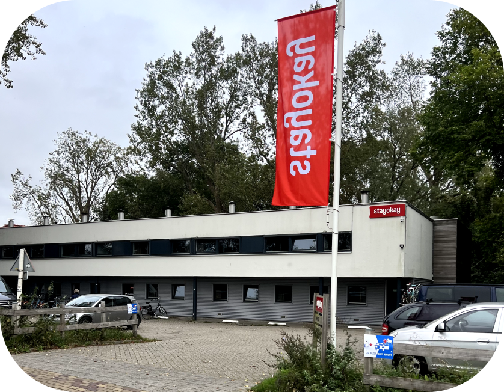
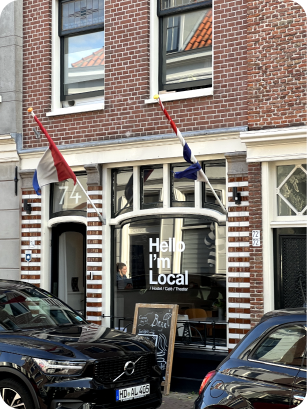
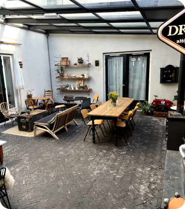
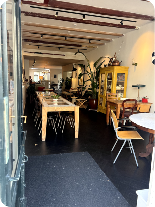
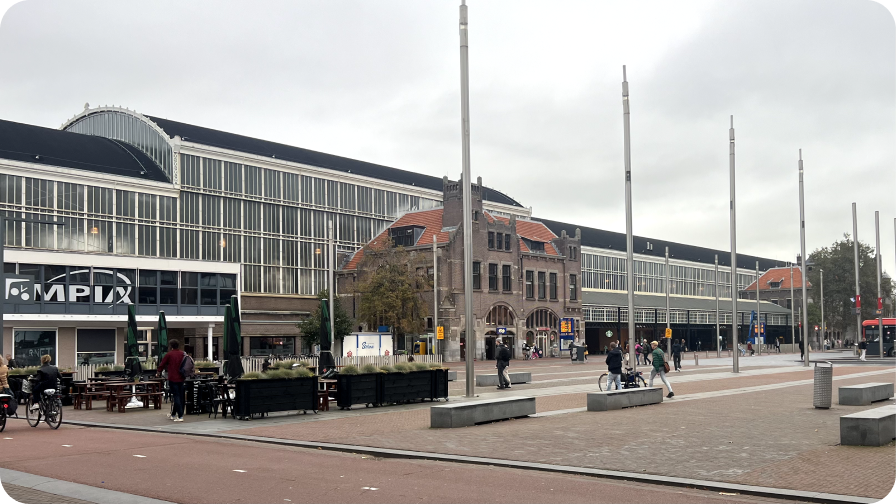

Finding a place to stay in Haarlem before you even get there is pretty ideal. If you managed to secure a place in advance then all that’s left to do is register at the city office, collect your Dutch Citizen Service Number (BSN), and start your journey. But don’t worry if you didn’t find a spot yet because there are options.
Booking a Hostel in Haarlem:
If it doesn’t seem like a possibility for you to rent somewhere or know someone who will let you stay with them, booking a hostel is the perfect solution. There are not many hostels but one option is “Stayokay Hostels” which is north of the city center. The good thing about Haarlem is that public transportation is really efficient so getting around won’t be an issue. The number 2 bus conveniently picks you up right from the hostel and takes you downtown in just 15 minutes.
If you're considering a stay at "I'm Local Hostel," located right in the heart of Haarlem, you'll have easy access to all the attractions this vibrant city has to offer. The hostel's central position ensures that exploring Haarlem's highlights is a breeze, and with excellent public transportation connections nearby, venturing further afield is equally convenient. Situated just moments away from the bustling center, I'm Local Hostel provides an ideal base for your visit to Haarlem.
  Getting to Amsterdam Schiphol Airport:
There’s actually quite a few ways to get there but if you’re coming from another country then chances are this airport will be your best bet since it’s the closest international airport to Haarlem. Here’s how to get there:
Train Travel: Even though this airport has so much going on, the process of finding your way through it isn’t that bad.
- Sep 1: Take a train from Schiphol Airport to Amsterdam Sloterdijk station. Be sure to check in before boarding and check out after disembarking, as this is essential for Dutch public transport.
- Step 2: From Amsterdam Sloterdijk, you can catch a direct train to Haarlem. This is a convenient and well-connected route, making your journey to Haarlem a breeze.
To find yourself in Haarlem and ready to embark on your exciting new journey, simply follow these straightforward steps. While it's advisable to secure accommodation prior to arrival, rest assured that both hostels in Haarlem and the efficient Dutch transport system can provide temporary solutions for those seeking more permanent lodgings. Welcome warmly as you begin your adventure in captivating Haarlem!
Haarlem train station